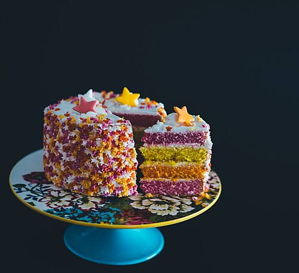

baking tips for cookies...
Cooling cookie dough is an important step, even if it is a bit boring! It helps the heat distribute better for certain types, letting them keep their shape and cook correctly. If you're looking for any good recipies, I'd highly suggest SallysBakingAddiction! Her Lemon Cookies are good examples of ones that need cooling, while her shortbread slices are a good example for some that don't.
baking tips for cakes...
If you have a multi-level cake, and you're trying to figure out if you've distributed the batter evenly, you can actually use a toothpick to help! Say you have two pans. You'd grab two clean toothpicks, stick them in vertically in the cakes, and then pull out and compare how high the batter stuck on each toothpick. It's a small but pretty useful trick!

baking tips for frosting...
Frosting is one of the most fun parts of making a cake, but is also one of the hardest! One trick that I've found is that if you have a particularly crumbly cake, you can put on a super light layer of icing just to hold the crumbs. Then, put the cake in the fridge or freezer for a couple minutes to harden that layer just a bit. Once you're done, you can continue the rest of the icing over that without worry of the crumbs getting in your way!